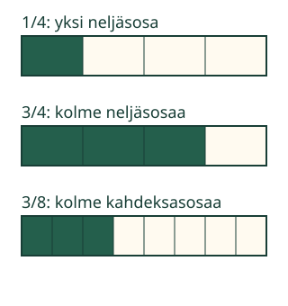

Mitä murtoluvun luvut tekevät?
Aava merkitsee kylttinauhasta varatun osan. Mitä kuvalle tapahtuu, kun hän vaihtaa vain toisen luvun?
Tutkin, mitä osoittaja ja nimittäjä kertovat.
Yksi kokonainen ensin
Ota paperisuikale ja taita se neljään yhtä suureen osaan. Merkitse yksi osa ja sitten kolme. Sama suikale on koko ajan yksi kokonainen. Osan koko ei muutu, kun merkitset niitä lisää.

Osoittaja: kuinka monta osaa?
Merkinnässä 3/4 yläluku 3 on osoittaja. Kolme neljäsosaa tarkoittaa kolmea 1/4-osaa. Valitut osat voivat olla eri puolilla nauhaa.
Nimittäjä: minkä kokoisia osia?
Alaluku 4 on nimittäjä. Se nimeää osan: yksi neljäsosa, 1/4. Yhteen kokonaiseen mahtuu neljä sellaista yhtä suurta osaa. Merkinnässä 3/8 osoittaja on yhä 3, mutta valitaan pienempiä osia samasta kokonaisesta.
Ansakohta
Nimittäjä ei laske vain vaaleita osia. Kuvan 3/4-nauhassa on yksi vaalea osa, mutta osia on yhteensä neljä. Suurempi nimittäjä tarkoittaa pienempää yksikköosaa, kun kokonainen on sama.
Muuta vain toista lukua
Ennusta: jos vaihdat 3/4:n nimittäjäksi 8 ja pidät osoittajan samana, kasvaako merkitty osuus? Kokeile. Kuva muuttuu heti; tässä ei ole pisteitä.
Osoittaja: 3
Tässä ohjaimessa osoittajan alue on 0–4 ja nimittäjät 4, 6 ja 8. Nimittäjän vaihto säilyttää osoittajan. Tämä ohjain ei näytä kaikkia mahdollisia murtolukuja.
Tutki kahden merkinnän suhdetta
Muuttuu seuraavaksi:
Tutki kuvia ja valitse.
Apua lukujen tehtäviin
Katso ensin samaa kohtaa molemmissa merkinnöissä. Osoittaja kertoo valittujen yksikköosien määrän. Nimittäjä nimeää yksikköosan. Lippukuvassa kokonainen on koko kuuden lipun joukko: siinä verrataan lukumääriä, ei lippujen pinta-alaa.
Lisätutkimus: ei yhtään tai kaikki
Tutki alla mallia 0/4 ja lisää sitten valittuja osia, kunnes mallissa on 4/4. Nolla osoittajana kertoo, ettei yhtään osaa ole merkitty. 4/4 kattaa yhden kokonaisen. Osoittaja ei siis aina ole nimittäjää pienempi. Useamman kokonaisen murtoluvut ovat jatkoaihe.
Tutki nollaa ja kokonaista tässä
Malli on ilman JavaScriptiä alkuperäisessä kohdassaan: avaa mallin kohta.
Opettajalle: tarkoitus, tuki ja rajat
Vuosiluokat 3–6. Vaadittu M-FRAC-02 yhdistää kuvan ja merkinnän. Vahva M-REP-04 on esittämisen tuki, ei lisäportti; sanojen tehtävät opetetaan tässä. Pienten lukujen lukemista ja laskemista käytetään. Aikuinen voi lukea, eikä erillistä esineiden nimeämistä tai puhekuittausta vaadita.
Taitelkaa kaksi samankokoista suikaletta. Merkitkää kolme neljäsosaa toiseen ja kolme kahdeksasosaa toiseen. Verratkaa yhden osan kokoa ja koko merkittyä osuutta. Yhtä suurten pinta-alaosien ei tarvitse olla samanmuotoisia; tarvittaessa palauta M-FRAC-02:n eri muotoisten neljäsosien malli.
Tämä jatkaa lukujen merkityksiin, ei toista vain kuvan nimeämistä. Vertailu toimii saman kokonaisen ja kiinteän toisen luvun avulla. Se ei opeta yleistä erisuuruisten murtolukujen järjestämistä eikä yhteenlaskua. Sama 1/2 on lukuna aina sama, mutta eri kokoisten kokonaisten puolikkaat voivat olla eri määrä paperia.
Harjoitus tarkistaa kahden luvun tehtävien tunnistamisen annetuissa kuvissa. Mallin vapaa muuttaminen on tutkimista. Kumpikaan ei osoita itsenäistä fyysistä jakamista, vapaata selittämistä, pysyvää osaamista tai formaalia hallintaa. Ei henkilötietoja, pisteitä eikä tallennusta. Ilman JavaScriptiä kuvien esimerkit ja offline-tehtävä säilyvät.
Lopuksi
Näytä merkinnästä 3/8, kumpi luku nimeää osan ja kumpi kertoo niiden määrän. Voit osoittaa, piirtää tai kertoa omin sanoin.